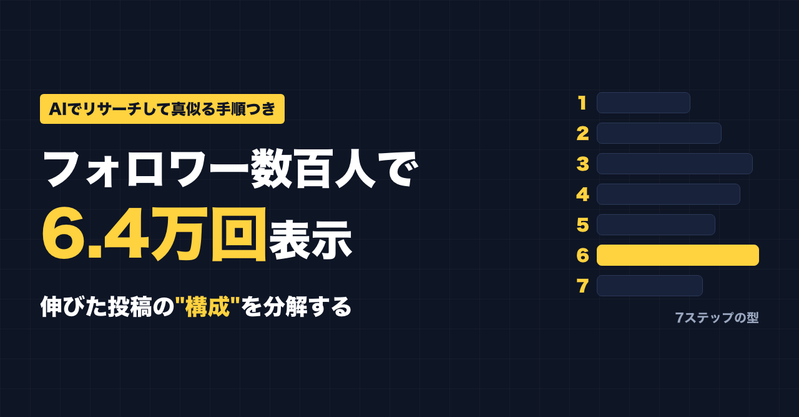
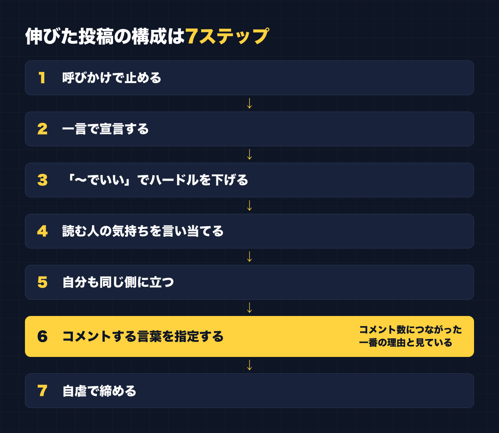
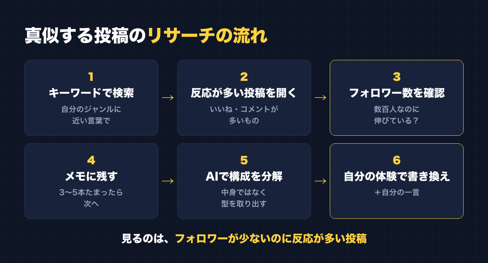

1. タイトルをコピーして、note のタイトル欄に貼る
2. 「本文1をコピー」から順にコピーし、note の本文に貼る
3. 青いラベルの位置に、images フォルダの同じ名前の画像を入れる（本文には貼られません）
※ 見出しが普通の文字になった場合は、その行を選んで「大見出し」を設定してください

別で運用しているアカウントがあります。
フォロワーは数百人。投稿しても、反応は100にも届かない。いいねが1〜11くらいの投稿が並んでいました。
そのアカウントで、2026年3月に出した1本が、こうなりました。
- 表示：6.4万回
- いいね：2,065
- コメント：1,306

文章がうまくなったわけではありません。
やったのは、伸びている投稿を見つけて、その「構成」だけを真似たことです。
講座にいくつもお金を払ってきて、どこでも言われたのは結局同じでした。続ける。売れている人を真似る。手を動かす。
この1本は、その「真似る」を、いちばん素直にやった結果です。
この記事では、その投稿を7つのステップに分解して、空欄を埋めれば自分のジャンルで使える形にしました。
あわせて、伸びている投稿をAIでリサーチして、構成を抜き出すやり方もまとめています。
この記事で手に入るもの
- 6.4万回表示された投稿の構成を、7ステップに分解したもの
- 空欄【 】を埋めるだけの7ステップのテンプレート
- ほかのジャンルに当てはめた作例3本（早起き部・読書部・節約部）
- 真似する投稿の探し方（フォロワー数百万ではなく、数百人の人を見る理由）
- AIに貼るだけのリサーチ用の頼み方（コピペ用3本）
- 投稿の構成をステップに分解する
- コメントしやすい理由を見つける
- 自分のジャンルに書き換える（自分の言葉を残したまま）
- 1本当たっても続かなかった話と、当たったあとに用意しておきたいこと
- 真似するときに絶対にやってはいけないこと
こんな人に向いています
- フォロワーが少なく、何を投稿しても反応がほとんどない
- 伸びている投稿を見ても、どこを真似ればいいのか分からない
- AIに投稿を書かせているけど、どれも同じような文章になる
向いていない人
- 伸びた投稿の文章を、そのまま自分の投稿として使いたい人
→ この記事は「構成」を借りて、中身は自分で書くやり方です。文章の丸写しはしないでください
- 1本出せば、そのあともずっと伸び続ける方法を探している人
→ 正直に書くと、私のアカウントはその後、いいね一桁台に戻りました。その話も有料部分に書いています
――――ここから有料――――
1. まず結論：真似るのは「中身」ではなく「構成」
最初に、いちばん大事なことを書きます。
真似るのは構成。中身は自分で書く。最後に自分の一言を足す。
伸びている投稿には、読む人の気持ちを動かす「順番」があります。
その順番だけを借りて、話の中身は自分のジャンル・自分の体験で埋める。
これなら丸写しにはなりませんし、読む人から見ても「どこかで見た投稿」になりにくいです。
もう一つ。私はAIに文章を丸ごと書かせるより、自分がボソッとつぶやいた一言のほうが反応がある、と感じています。
だからAIに任せるのは、リサーチと下書きまで。人間味は自分で足します。
2. 6.4万回表示された投稿の構成（7ステップ）

伸びた投稿は、「〇〇部、発足します」という形の投稿でした。
中身を7つに分けると、こうなっています。
ステップ1：呼びかけで止める
「おぉーーーい！！！」
タイムラインを流している指を、まず止める一言です。
ステップ2：一言で宣言する
「〇〇部、発足します」
何の投稿なのかを、最初の2行で言い切ります。
ステップ3：「〜でいい」を並べて、参加のハードルを下げる
「〜でいい」「〜でもいい」を並べて、「それくらいなら自分もできる」と思ってもらう部分です。
ここで「参加していいんだ」という空気を作ります。
ステップ4：読む人の気持ちを言い当てる
「続かないのは意志じゃなく、言える場所がないだけ」
読んだ人が「それ、自分のことだ」と思う一文です。責めずに、理由を別のところに置いてあげるのがポイントです。
ステップ5：自分も同じ側に立つ
「おれも続かなかった側」
上から教える人ではなく、同じ悩みを持っている人として話します。
ステップ6：コメントする言葉を指定する
「『入部します』ってコメントください」
ここが、コメント数1,306につながった一番の理由だと見ています。
「コメントください」だけだと、読む人は何を書けばいいか考えないといけません。
言葉まで決めてあると、考えずに打てます。4文字打つだけで参加できる。この差が大きかったと思っています。
ステップ7：自虐で締めて、押しつけ感を消す
「誰も来なかったら1人でやりますw」
最後に少し笑えるひと言を置くと、「参加してね」という圧が消えます。
7ステップの流れ（まとめ）
呼びかけ → 宣言 → 「〜でいい」でハードルを下げる → 気持ちを言い当てる → 自分も同じ側 → コメントする言葉を指定 → 自虐で締める
3. 空欄を埋めるだけのテンプレート
【 】の中を、自分のジャンルの言葉に置き換えてください。
言い回しは、自分がふだん話す言葉に直して大丈夫です。むしろ直してください。
【呼びかけ：例「おーい！」「ちょっと聞いて！」】
【〇〇】部、発足します。
【ハードルを下げる一文1】でいい。
【ハードルを下げる一文2】でいい。
【ハードルを下げる一文3】でもいい。
【続かない・できない理由】のは、【読む人のせいではない本当の理由】だけ。
【自分も同じだったという一文】
参加する人は「【コメントしてほしい言葉（短く）】」ってコメントください。
【自虐のひと言。例「誰も来なかったら1人でやります」】埋めるときのコツを3つ書いておきます。
- コメントの言葉は短く：4〜6文字くらい。考えなくても打てる長さにする
- 「〜でいい」は、本当に小さく：「1分でいい」「報告だけでいい」くらいまで下げる
- 自分も同じ側の一文は、本当のことを書く：やったことがないのに「自分もそうだった」と書くと、どこかでずれが出ます
4. ほかのジャンルでの作例（3本）
ここからは、テンプレートをほかのジャンルに当てはめた作例です。
私がこの記事のために書いたもので、実際に投稿した結果ではありません。
伸びるかどうかも分かりません。「こう当てはめる」という見本として読んでください。
そのまま使わず、自分の体験に合わせて書き換えてください。
作例1：早起き部
おーーい！！
早起き部、発足します。
5時じゃなくていい。
いつもより10分早いだけでいい。
起きたら「おはよう」って書くだけでいい。
早起きが続かないのは、根性がないからじゃなくて、
起きても誰にも言う相手がいないだけ。
自分も、目覚ましを止めて二度寝する側です。
参加する人は「起きた」ってコメントください。
誰も来なかったら、明日1人で「起きた」って書きますw作例2：読書部
ちょっと聞いてーー！
読書部、発足します。
1冊読み切らなくていい。
1日1ページでいい。
マンガでも、雑誌でもいい。
本が読めないのは、時間がないからじゃなくて、
読んだことを話せる場所がないだけ。
自分も、買って積んだままの本が何冊もあります。
参加する人は「入部」ってコメントください。
誰も来なかったら、積ん読を1人で崩しますw作例3：節約部
おぉーい！！
節約部、発足します。
家計簿をつけなくていい。
今日コンビニに寄らなかった、だけでいい。
100円でも浮いたら、それで勝ち。
節約が続かないのは、我慢が足りないからじゃなくて、
がんばったことを誰にも褒めてもらえないだけ。
自分も、気づいたらお菓子を買っている側です。
参加する人は「今日は勝ち」ってコメントください。
誰も来なかったら、1人でお菓子を我慢しますw3本とも、中身はまったく違いますが、並びは同じです。
これが「構成を真似る」ということです。
5. 真似する投稿の探し方

フォロワー数百万の人ではなく、数百人の人を見る
真似する投稿を探すとき、フォロワーが何十万・何百万といる人の投稿は参考にしにくいです。
その人の投稿は、内容ではなく「その人だから」見られている部分が大きいからです。
見るべきなのは、フォロワーが数百人なのに、反応が大きく伸びている投稿です。
フォロワーが少ないのに伸びているなら、伸びた理由は投稿そのもの、つまり構成や言葉にある可能性が高い。
それなら、自分にも再現できるかもしれません。
Threads で手作業で探す
私がすすめるのは、Threads の検索を自分の手で使うやり方です。
1. 自分のジャンルに近いキーワードで検索する（例：「続かない」「〇〇部」「朝活」「節約」など）
2. いいね・コメントが多い投稿を開く
3. 投稿した人のプロフィールを見て、フォロワー数を確認する
4. フォロワーが少ないのに反応が多い投稿だけ、メモに残す
5. 3〜5本たまったら、次の章のAIリサーチに回す
休憩中の5分で1〜2本見つかれば十分です。
一度に何十本も集めなくていいです。
ツールで大量に集めない
投稿を自動で集めるツールやプログラムを使って、大量に取ってくる方法もあります。
でも、サービスの利用規約で禁止されていることが多いので、私はやりません。この記事でもすすめません。
自分の目で見て、手でメモする。それで十分です。
6. AIでリサーチする（コピペ用の頼み方3本）
見つけた投稿を、AIに分解してもらいます。
【 】の中を書き換えて、そのまま貼ってください。
貼る投稿の本文は、分析のためだけに使います。
AIに「この投稿を書き換えて」と頼んで、そのまま投稿するのはやめてください。
① 投稿の構成をステップに分解する
あなたは、SNSの投稿の構成を分析するのが得意なアシスタントです。
次の投稿を、読む人の気持ちの動きに沿って「ステップ」に分解してください。
【分析したい投稿の本文を貼る】
・投稿した人のフォロワー数：【例：約300人】
・反応：【例：いいね1,500、コメント800】
出してほしいもの：
1. ステップごとに「役割（何のための部分か）」を一言で
2. それぞれのステップで、読む人がどんな気持ちになるか
3. 他のジャンルでも使える形に、空欄つきのテンプレートにしたもの
本文の言い回しをそのまま使うのではなく、「型」だけを取り出してください。② コメントしやすい理由を見つける
次の投稿は、フォロワー数のわりにコメントがとても多く集まっています。
【投稿の本文を貼る】
・コメント数：【例：800】
・いいね数：【例：1,500】
コメントが集まった理由を、次の観点で分析してください。
1. コメントするときに、読む人が考えなくていい工夫はあるか
2. 「自分も参加していい」と思わせる言葉はどこか
3. 押しつけや圧を消している部分はどこか
4. 逆に、コメントしにくくなる要素があるとしたら何か
最後に、「コメントしやすい投稿」にするためのチェック項目を5つにまとめてください。③ 自分のジャンルに書き換える（自分の言葉を残す）
ここが一番大事です。
AIに丸ごと書かせると、どうしても「AIっぽい文章」になります。
なので、自分の体験と、自分がふだん使っている言葉を先に渡します。
次の「型」を使って、私のジャンルの投稿の下書きを作ってください。
【①で出てきたテンプレートを貼る】
・私のジャンル：【例：早起き】
・私の本当の体験：【例：目覚ましを止めて二度寝してしまう。平日は起きるのが遅い】
・私がふだん使う言葉づかい：【例：「〜です」より「〜なんよね」。語尾に「w」をつける】
・コメントしてほしい言葉：【例：「起きた」】
ルール：
・元の投稿の文章や言い回しは使わない
・私の体験に書いていないことは書かない
・きれいな文章にしすぎない。話し言葉のままでいい
・3パターン出して、それぞれ1行目を変える出てきた3パターンを見て、そのまま使わないでください。
いちばん近いものを選んで、最後に自分の一言を足す。 言い回しを1〜2か所、自分の口ぐせに変える。
これだけで、ぐっと自分の投稿になります。
7. 正直な話：1本当たっても、続かなかった
ここは、きれいごとにしたくないので正直に書きます。
6.4万回表示された投稿のあと、そのアカウントの投稿は、いいね一桁台に戻りました。
1本当たったからといって、アカウントがずっと伸びるわけではありませんでした。
1本の当たりは、あくまで1本です。
続けて投稿しないと、伸びは続かない。これが、実際にやって分かったことです。
当たったときのために、用意しておきたいこと
だから、これから「〇〇部」型の投稿を出すなら、当たったあとの動きも先に決めておくのがいいと思っています。
- コメントに返信する：「入部します」と書いてくれた人に、一人ずつ返す。短くていい。参加してくれた人が「見てもらえた」と思える場所にする
- 「部」の活動報告を投稿する：発足しっぱなしにしない。「〇日目」「今日は〇人が報告してくれた」など、続きを出す
- その投稿を固定する：プロフィールに来た人が、最初に目にする場所に置いておく。あとから来た人も入部できるようにする
「部」を作ったなら、部長として続きを出す。
ここまでセットで考えておくと、1本の当たりを次につなげやすくなります。
8. 真似するときに、やってはいけないこと
最後に、大事なことです。
- 文章をそのまま使わない：人の投稿の本文を、自分の投稿として出すのは盗用です。言い回しを少し変えただけ、もダメです
- 決めゼリフを丸ごと借りない：その人らしさが出ている一文は、その人のものです
- 元の投稿の人を下げない：「この人の投稿を分析したら〜」と名前を出して、あれこれ言うのはやめましょう
- やっていないことを書かない：「自分も同じだった」の一文に嘘を入れると、あとで苦しくなります
- 大量に自動で集めない：前の章でも書きましたが、利用規約を守って、手で探してください
借りていいのは、読む人の気持ちを動かす「順番」だけです。
中身は、自分の体験で埋める。それがいちばん長く使えるやり方だと思っています。
おわりに
フォロワーが数百人でも、構成を真似るだけで、1本が大きく伸びることはあります。
ただ、それは1本です。続けないと、また元に戻ります。
大事なのは、
- 伸びている投稿から「構成」だけを借りること
- 中身と最後の一言は、自分で書くこと
- 当たったあとも、続けて出すこと
の3つです。
まずは今日、休憩中の5分で、フォロワーが少ないのに伸びている投稿を1本だけ探してみてください。
公式LINEでは、発信や副業に使えるプロンプトを配っています。「特典」と送ると、LINE限定のプロンプト5本が届きます。
https://lin.ee/RzyA13P
自分の強みを整理して、SNSの投稿の下書きまで作れるツール「副業ドラフト」も作っています。Threads の下書き3本までは無料で試せます。
https://note-threadssf.onrender.com